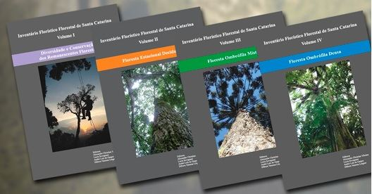
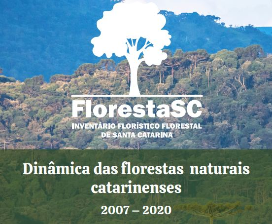
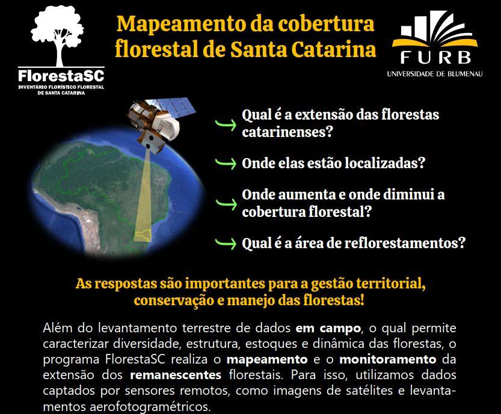
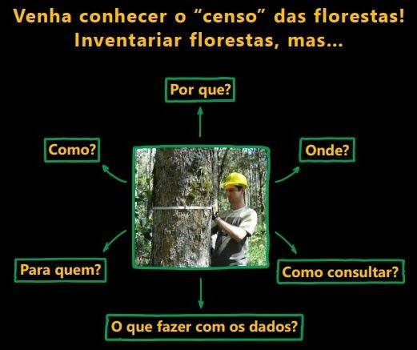
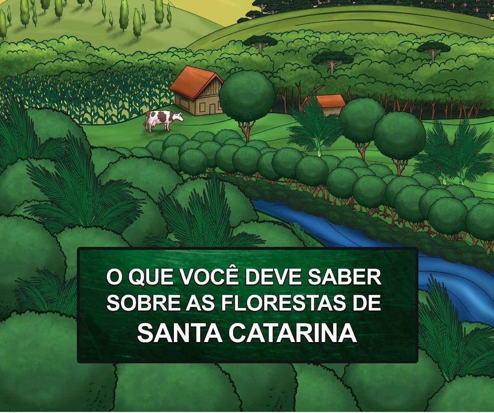
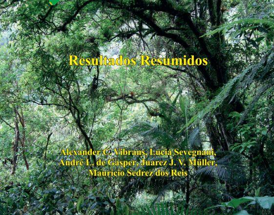
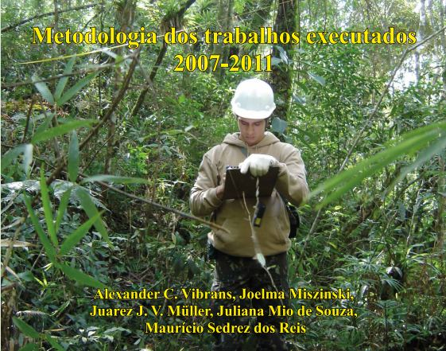
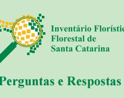

Uma das propostas do FlorestaSC é gerar publicações de alta qualidade científica envolvendo resultados relacionados às florestas catarinenses.
Últimas Publicações
 Revista Brasileira de Geografia Fisica (2024)
Revista Brasileira de Geografia Fisica (2024) Dinâmica das florestas naturais catarinenses (ênfase em estoques de carbono)
Dinâmica das florestas naturais catarinenses (ênfase em estoques de carbono)Livros
- Volume I - Diversidade e Conservação dos Remanescentes Florestais
- Volume II - Floresta Estacional Decidual
- Volume III - Floresta Ombrófila Mista
- Volume IV - Floresta Ombrófila Densa
- Volume V - Epífitos
- Volume VI - Guia dos Epífitos de Santa Catarina
- Volume VII - Espécies raras de Santa Catarina
- Biodiversidade Catarinense: características, potencialidades, ameaças
- Regressão linear aplicada à dendrometria: uma introdução e iniciação ao R
Artigos científicos
- Artigos publicados em revistas científicas
- Dissertações de mestrado
- Teses de doutorado
- Trabalhos de conclusão de curso
- Relatórios de estágio supervisionado
Documentos técnicos
- Manual de Campo do IFFSC/MonitoraSC: Remedições
- Ampliação da amostragem do Inventário Florístico Florestal de Santa Catarina (IFFSC/MonitoraSC) nas Unidades de Conservação Estaduais
- Modelo de volume total para espécies arbóreas da Floresta Ombrófila Densa de Santa Catarina
- Modelos genéricos de biomassa acima do solo para espécies arbóreas da Floresta Ombrófila Densa de Santa Catarina
Cartilhas
Inventário dos Remanescentes Florestais
- Perguntas e Respostas sobre o IFFSC/MonitoraSC
- Metodologia IFFSC/MonitoraSC dos Trabalhos Executados 2007/2011
- Resultados Resumidos dos Trabalhos Executados 2007/2011
- O quê você deve saber sobre as florestas de Santa Catarina
- Venha conhecer o "censo" das florestas!
- Mapeamento da cobertura florestal de Santa Catarina
Levantamento Socioambiental (LSA)
- Levantamento socioambiental
- Caracterização socioambiental e sistema de informações florestais
- Percepção dos moradores sobre serviços ambientais das florestas
- Cipó-mil-homens (Aristolochia triangularis) – Mitos e verdades
- Espinheiras-santa nativas de Santa Catarina
- Uso equivocado de plantas medicinais em Santa Catarina
- Palmeira-juçara – Percepções sobre uso e conservação
- Uso madeireiro de espécies nativas de Santa Catarina
- Um olhar para as plantas ornamentais nativas de Santa Catarina
- Araucária – Percepções sobre uso e conservação
Boletins
Boletins periódicos sobre o andamento das atividades do IFFSC e novidades.
Cartazes
- Biodiversidade Catarinense
- Espécies raras e ameaçadas de Santa Catarina
- Cartazes de divulgação
Documento de política florestal
Apresenta as linhas de ação para desenvolvimento de uma nova política florestal no estado de Santa Catarina
- Using satellite image-based maps and ground inventory data to estimate the area of the remaining Atlantic forest in the Brazilian state of Santa Catarina
- Effects of topographic correction on natural forest reflectance in a mountainous region of southern Brazil. In: XIX Simpósio Brasileiro de Sensoriamento Remoto, 2019, Santos. Anais do XIX Simpósio Brasileiro de Sensoriamento Remoto. São José dos Campos: INPE, 2019. v. 17. p. 1-4.
- Enciclopédia Flora Ilustrada Catarinense - FIC
- Klein, R.M. O aspecto dinâmico do pinheiro-brasileiro
- Reitz, R. Vegetação da zona marítima de Santa Catarina
- Klein, R.M. Importância e fidelidade das Lauráceas na "Formação de Araucária" do estado de Santa Catarina
- Klein, R.M. Árvores Nativas da Floresta Subtropical do Alto Uruguai
- Klein, R. M. Mapa fitogeográfico do Estado de Santa Catarina. In: Reitz, R. (Ed.). Flora Ilustrada Catarinense.
- Reitz, R.; Klein, R.M.; Reis, A. Madeiras do Brasil: Santa Catarina
- Klein, R. M. Ecologia da flora e vegetação do Vale do Itajaí
- Klein, R. M. Ecologia da flora e vegetação do Vale do Itajaí (continuação)
- Klein, R. M. Aspectos dinâmicos da vegetação do sul do Brasil
- Leite, P.F.; Klein, R.M. 1990. Vegetação. In Geografia do Brasil: Região Sul.
- Reis, A.; Fantini, A. C.; Reis, M. S.; Guerra, M. P.; Doebeli, G. Aspectos sobre a conservação da biodiversidade e o manejo da Floresta Tropical Atlântica
Publicações do inventário

Livros
- Volume I - Diversidade e Conservação dos Remanescentes Florestais
- Volume II - Floresta Estacional Decidual
- Volume III - Floresta Ombrófila Mista
- Volume IV - Floresta Ombrófila Densa
- Volume V - Epífitos
- Volume VI - Guia dos Epífitos de Santa Catarina
- Volume VII - Espécies raras de Santa Catarina
- Biodiversidade Catarinense: características, potencialidades, ameaças
- Regressão linear aplicada à dendrometria: uma introdução e iniciação ao R
Publicações Científicas
- Artigos publicados em revistas científicas
- Dissertações de mestrado
- Teses de doutorado
- Trabalhos de conclusão de curso
- Relatórios de estágio supervisionado
Documentos Técnicos
- Manual de Campo do IFFSC: Remedições
- Ampliação da amostragem do Inventário Florístico Florestal de Santa Catarina (IFFSC) nas Unidades de Conservação Estaduais
- Modelo de volume total para espécies arbóreas da Floresta Ombrófila Densa de Santa Catarina
- Modelos genéricos de biomassa acima do solo para espécies arbóreas da Floresta Ombrófila Densa de Santa Catarina
Cartazes
- Biodiversidade Catarinense
- Espécies raras e ameaçadas de SC
- Cartazes de divulgação
Boletins
- Boletins periódicos sobre o andamento das atividades do IFFSC e novidades.
Cartilhas
Inventário dos Remanescentes Florestais
- Perguntas e Respostas sobre o IFFSC
- Metodologia IFFSC dos Trabalhos Executados 2007/2011
- Resultados Resumidos dos Trabalhos Executados 2007/2011
- O quê você deve saber sobre as florestas de Santa Catarina
- Venha conhecer o "censo" das florestas!
Levantamento Socioambiental (LSA)
- Levantamento socioambiental
- Caracterização socioambiental e sistema de informações florestais
- Percepção dos moradores sobre serviços ambientais das florestas
- Cipó-mil-homens (Aristolochia triangularis) – Mitos e verdades
- Espinheiras-santa nativas de Santa Catarina
- Uso equivocado de plantas medicinais em Santa Catarina
- Palmeira-juçara – Percepções sobre uso e conservação
- Uso madeireiro de espécies nativas de Santa Catarina
- Um olhar para as plantas ornamentais nativas de Santa Catarina
- Araucária – Percepções sobre uso e conservação
Livros
Livros publicados:
Livros IFFSC: Volumes 1 – 7
Os livros impressos estão disponíveis para doação a instituições de ensino ou governamentais via solicitação (ou pelo email iffsc@furb.br ou inventarioflorestal.sc@gmail.com).
Atenção: A versão do Volume 3 baixada até 2016 ou impressa contém erros em duas tabelas. O arquivo com as devidas correções já foi substituído para novo download. Tabelas corrigidas: Tabela 2.20 e Tabela 2.21
Nossos livros:
- Volume I - Diversidade e Conservação dos Remanescentes Florestais
- Volume II - Floresta Estacional Decidual
- Volume III - Floresta Ombrófila Mista
- Volume IV - Floresta Ombrófila Densa
- Volume V - Epífitos
- Volume VI - Guia dos epífitos de Santa Catarina
- Volume VII - Espécies Raras
➤ Acesse o link para consultar as estimativas por ponto amostral e por área florestada.
➤ Faça seu cadastro para o download dos livros (Volumes 1–7).
Volume 6: Guia dos Epífitos de Santa Catarina
A versão digital está disponível para download.
O livro impresso está disponível para compra no site da Editora FURB.
A obra tem como objetivo guiar os admiradores deste grupo de plantas no reconhecimento de 116 espécies, por meio de fotografias e informações ecológicas.
Volume 7: Espécies arbóreas raras de Santa Catarina
O livro trata da ocorrência das espécies arbóreas raras de Santa Catarina, com base nos dados de campo do MonitoraSC. Além disso, análises da estrutura da população e da diversidade genética foram realizadas para algumas espécies arbóreas com alto valor de uso e conservação.


Biblioteca da Floresta Catarinense
A Biblioteca da Floresta Catarinense é um material educativo composto por cinco (5) livretos que abordam diferentes temáticas sobre as florestas catarinenses. Este material visa promover percursos formativos com professores e estudantes a fim de despertar a curiosidade, sensibilizar ao conhecimento socioambiental e mobilizar às ações sustentáveis sobre e nas nossas florestas catarinenses, via escola e universidade.

➤ Faça seu cadastro para o download da coleção Biblioteca da Floresta Catarinense.
A coleção Biblioteca da Floresta Catarinense é composta pelos seguintes livretos:
- Volume 1: Cobertura Florestal
- Volume 2: Riquezas da Floresta
- Volume 3: Usos de Produtos e Serviços da Floresta
- Volume 4: Impactos Antrópicos na Floresta
- Volume 5: Estoques da Floresta
Ouça o Podcast sobre a Biblioteca da Floresta Catarinense:
Relatório – Inventário Florestal Nacional em Santa Catarina (IFN-SC)

Este relatório foi elaborado sob a coordenação do Serviço Florestal Brasileiro (SFB) e traz os principais resultados do Inventário Florestal Nacional (IFN) realizado em Santa Catarina.
A obra apresenta uma síntese sobre a extensão e qualidade dos recursos florestais do estado e aborda a importância e o papel das florestas na vida das pessoas que residem no meio rural.
Clique na figura para acessar o relatório on-line.
Acesse também a seção de Publicações do SFB, onde você encontra esta e outras publicações, incluindo os relatórios sobre os resultados do IFN em outros estados.
Livro – Regressão Linear

Pode ser adquirido pelos sites:
Editora FURB: www.furb.br/editora; Livraria Cultura: www.livrariacultura.com.br; Cia dos Livros: www.ciadoslivros.com.br; Amazon: www.amazon.com.br
Aqui estão disponibilizados os dados e as rotinas no R para a realização dos exercícios do livro:
Livro - Biodiversidade Catarinense
A Editora da Universidade Regional de Blumenau (Editora da FURB) lançou a obra "Biodiversidade catarinense: características, potencialidades, ameaças" organizada pelos pesquisadores Lucia Sevegnani e Edson Schroeder, como resultado da preocupação com a educação científica dos jovens e visando criar valores conservacionistas e habilidades e competências para lidar com o meio ambiente.
Financiada pela Fundação de Amparo à Pesquisa e Inovação do Estado de Santa Catarina (Fapesc) e distribuída a todas as Unidades de Ensino Fundamental e Básica de Santa Catarina e Universidades também.
Clique na figura para acessar on-line ou clique aqui; este link irá direcioná-lo para a Biblioteca Universitária da Furb, onde o livro também está disponível, gratuitamente, em versão PDF.
Download dos livros
FAÇA SEU CADASTRO!
Publicações científicas
Artigos Científicos
Destaques
Abaixo, estão relacionados artigos para referenciamento do trabalho geral do FlorestaSC (inventário florestal).
➤ Metodologia
Vibrans, A.C.; Sevegnani, L.; Lingner, D.V.; Gasper, A.L.; Sabbagh, S. Inventário florístico florestal de Santa Catarina (IFFSC): aspectos metodológicos e operacionais. Pesquisa Florestal Brasileira, v. 30, p. 291–302, 2010. https://pfb.sede.embrapa.br/pfb/article/view/96
Vibrans, A.C.; Oliveira, L.Z.; Lingner, D.V.; Gasper, A.L. Contribuições para a harmonização de estimativas de atributos florestais por área de inventários florestais de larga escala. Pesquisa Florestal Brasileira, v. 42, 2022. https://dx.doi.org/10.4336/2022.pfb.42e202102199
➤ Resultados
Vibrans, A.C.; Gasper, A.L.; Moser, P.; Oliveira, L.Z.; Lingner, D.V.; Sevegnani, L. Insights from a large-scale inventory in the Southern Brazilian Atlantic Forest. Scientia Agricola, v. 77, p. 1-12, 2020. http://dx.doi.org/10.1590/1678-992X-2018-0036
Vibrans, A.C.; Oliveira, L.Z.; Gasper, A.L.; Lingner, D.V.; Schorn, L.A.; Silva, D.A. Unprecedented large-area turnover estimates for the subtropical Brazilian Atlantic Forest based on systematically-gathered data. Forest Ecology and Management, v. 505, 2022. https://doi.org/10.1016/j.foreco.2021.119902 [Artigo sobre os resultados da dinâmica florestal em inglês]
Vibrans, A.C.; Oliveira, L.Z.; Gasper, A.L.; Lingner, D.V.; Schorn, L.A.; Silva, D.A. Estimativas das taxas de mudanças de atributos florestais das florestas catarinenses, com base nos dados do Inventário Florístico Florestal de Santa Catarina. Resumo em Português do artigo publicado na revista Forest Ecology and Management, 505, 119902, 2022. [Resumo do artigo sobre os resultados da dinâmica florestal em português]
Publicados (em ordem cronológica)
2026
Gasper, A.L.; Klipel, J.; Bergamin, R.S.; Vieira, S.; Bordin, K.; Silva, R.F.B.; et al. Understanding the potential for climate adaptation of the Atlantic Forest hotspot requires a research collaboration network. Perspectives in Ecology and Conservation, v. 23, p. 274-279, 2026. https://doi.org/10.1016/j.pecon.2026.03.003
Oliveira, L.Z.; Vibrans, A.C. Common allometric aboveground biomass models for two Atlantic forest tree ferns. Floresta e Ambiente, v. 33, e20260030, 2026. https://doi.org/10.1590/2179-8087-FLORAM-2026-0030
Oliveira, L.Z.; Vibrans, A.C. A web tool for predicting log assortments in secondary Atlantic forests using regional taper models. Scientia Agricola v. 83, e20250137, 2026. https://doi.org/10.1590/1678-992X-2025-0137
Oliveira, L.Z.; McRoberts, R.E.; Liesenberg, V.; Vibrans, A.C. Appraising the effects of tree height prediction uncertainty on large-scale estimates for mean wood volume per unit area for a subtropical population. Canadian Journal of Forest Research, v. 56, p. 1-16, 2026. http://dx.doi.org/10.1139/cjfr-2025-0247
2025
Gasper. A.L; Grittz, G.S.; Machado, G.M.O.; Kassner Filho, A.; Funez, L.A.; Sobral, M.; Lingner, D.V.; Vibrans, A.C. FlorestaSC: A double-up approach to improve biodiversity monitoring in hyperdiverse forests. Forest Ecology and Management, v. 598, 2025. https://doi.org/10.1016/j.foreco.2025.123204
Grittz, G.S.; Lima, R.A.F.; Vibrans, A.C.; Kassner Filho, A.; Gasper. A.L. Assessing the extinction risk of tree species in the subtropical Atlantic Forest using multiple IUCN criteria. Oryx—The International Journal of Conservation, 2025. https://doi.org/10.1017/S0030605324001534
Silva, D.A.; Vibrans, A.C.; Bollmann, G.; Nicoletti, A.N.; Lingner, D.V. Filling the gap between pasture and forests: classifying initial-stage forests in the subtropics using satellite data. Journal of Applied Remote Sensing, v. 19(3), 2025. https://doi.org/10.1117/1.JRS.19.034502 [DOWNLOAD]
Network, I. T. M.; Senf, C.; Muelbert, A. E.; Pugh, T. A. M.; Anderegg, W. R. L.; Vibrans, A. C.; Maaten-Theunissen, M. V. D. International Tree Mortality Network. Towards a global understanding of tree mortality. New Phytologist, 2025. https://doi.org/10.1111/nph.20407
Oliveira, L.Z.; McRoberts, R.E.; Vibrans, A.C.; Liesenberg, V.; Uller, H.F. Comparing effects of uncertainty in predictions of local and pantropical allometric models on large-area estimates for mean aboveground biomass per unit area. Forestry: An International Journal of Forest Research, v. 98, p. 661–675, 2025. https://doi.org/10.1093/forestry/cpaf008
Silva, D.A.; Vibrans, A.C. Proposta metodológica para a estimativa da estrutura do dossel no IFN/BR utilizando fotografias hemisféricas. Pesquisa Florestal Brasileira, v. 45, p. 1-12, 2025. https://doi.org/10.4336/2025.pfb.45e202402302
2024
Oliveira, L.Z.; Vibrans, A.C.; Nicoletti, A.N.; Lerner, J. Allometric mixed-effects models for Dicksonia sellowiana Hook. and its contribution to biomass stocks of Araucaria forests in southern Brazil. Anais da Academia Brasileira de Ciências, v. 96(supl. 3), e20230176, 2024. https://www.scielo.br/j/aabc/a/sbPqHSfmrX5XDpBFnw7tTYD/?format=pdf&lang=en
Silva, D.A.; Vibrans, A.C.; Pfeifer, M. Edge effect and species richness modulate biomass stocks and change over time in secondary forest fragments in the subtropical Atlantic Forest. Plant Ecology & Diversity, 2024. https://doi.org/10.1080/17550874.2024.2430010
Bergamin, R.S.; Bastazini, V.A.G.; Esquivel-Muelbert, A. et al.. Elevational shifts in tree community composition in the Brazilian Atlantic Forest related to climate change. Journal of Vegetation Science, 2024. https://doi.org/10.1111/jvs.13289
Grittz, G.S.; Machado, G.M.O.; Vibrans, A.C. et al. Commonness as a reliable surrogacy strategy for the conservation planning of rare tree species in the subtropical Atlantic Forest. Biodiversity and Conservation, 2024. https://doi.org/10.1007/s10531-024-02849-2
Nicoletti, A.N.; Vibrans, A.C.; Andrade, M.Y.; da Veiga, J.L.; Bizon, A.R.; da Silva, M.S.; Lingner, D.V.; Farias, T.L. Mapeamento das Áreas Potenciais (originais) e Remanescentes de Restinga: uma proposta metodológica para Santa Catarina, Brasil Revista Brasileira de Geografia Fisica, v. 17, n. 1, p. 260-280, 2024. https://doi.org/10.26848/rbgf.v17.1.p260-280
Lima, R.A.F.; Dauby, G.; de Gasper. A.L.; Fernandez, E.P.; Vibrans, A.C.; Oliveira, A.A.; Prado, P.I.; Souza, V.C.; de Siqueira, M.F.; Ter Steege, H. Comprehensive conservation assessments reveal high extinction risks across Atlantic Forest trees. Science, v. 383, p. 219-225, 2024. https://www.science.org/doi/pdf/10.1126/science.abq5099
2023
Bastos, J.R.; Capellesso E.S.; Vibrans, A.C.; Marques, M.C.M. Human impacts, habitat quantity and quality affect the dimensions of diversity and carbon stocks in subtropical forests: a landscape-based approach. Journal for Nature Conservation, v. 73, 126383, 2023. https://doi.org/10.1016/j.jnc.2023.126383.
Delavaux, C. S.; Crowther, T. W.; Zohner, C. M.; Robmann, N. M.; Lauber, T.; van den Hoogen, J.; Gasper. A.L.; Vibrans, A.C.... & Parthasarathy, N. Native diversity buffers against severity of non-native tree invasions. Nature, 1-9, 2023. https://doi.org/10.1038/s41586-023-06440-7
Hordijk, I.; Maynard, D. S.; Hart, S. P.; Lidong, M.; Ter Steege, H.; Liang, J.; Gasper, A.L.; Vibrans, A.C.... & Pfautsch, S. Evenness mediates the global relationship between forest productivity and richness. Journal of Ecology, v. 111, p. 1308-1326, 2023. https://doi.org/10.1111/1365-2745.14098
2022
Silva, D.A.; Pfeifer, M.; Vibrans, A.C. Conspecific density plays a pivotal role in shaping sapling community in highly fragmented subtropical forests. Austral Ecology, p. 1-13, 2022. https://doi.org/10.1111/aec.13249
Oliveira, L.Z.; Vibrans, A.C. Evaluating trade-offs between using regional and site-specific allometric models to predict growing stock volume of subtropical Atlantic forests. Forest Science, v. 68, p. 365-375, 2022. https://doi.org/10.1093/forsci/fxac021
Oliveira, L.Z.; Maçaneiro, J.P.; Silva, D.A.; Uller, H.F.; Britto, P.C.; Correia, J.; Zambiazi, D.C; Fantini, A.C. Structure, biomass and diversity of a late-successional subtropical Atlantic Forest in Brazil. Floresta e Ambiente, v. 29, e20210095, 2022. https://doi.org/10.1590/2179-8087-FLORAM-2021-0095
Pyles, M.V.; Magnago, L.F.S.; Maia, V.A.; Pinho, B.X.; Pitta, G.; Gasper, A.L.; Vibrans, A.C., Santos, R.M.; Van Den Berg, E.; Lima, R.A. Human impacts as the main driver of tropical forest carbon. Science Advances, v. 8, eabl7968, 2022. https://doi.org/10.1126/sciadv.abl7968
Likoski, J.K.; Vibrans, A.C.; Silva, D.A. Recruitment exceeds mortality in subtropical secondary forest after conventional selective logging. Ciência Florestal, v. 32, p. 333-350, 2022. https://doi.org/10.5902/1980509855265
Vibrans, A.C.; Oliveira, L.Z.; Gasper, A.L.; Lingner, D.V.; Schorn, L.A.; Silva, D.A. Unprecedented large-area turnover estimates for the subtropical Brazilian Atlantic Forest based on systematically-gathered data. Forest Ecology and Management, v. 505, 2022. https://doi.org/10.1016/j.foreco.2021.119902
Vibrans, A.C.; Oliveira, L.Z.; Gasper, A.L.; Lingner, D.V.; Schorn, L.A.; Silva, D.A. Estimativas das taxas de mudanças de atributos florestais das florestas catarinenses, com base nos dados do Inventário Florístico Florestal de Santa Catarina. Resumo em Português do artigo publicado na revista Forest Ecology and Management, 505, 119902, 2022.
Britto, P.C.; Jaeger, D.; Hoffmann, S.; Robert, R.C.G.; Vibrans, A.C.; Fantini, A.C. Multi-year, post-harvesting impact assessment in a neotropical secondary Atlantic Forest. European Journal of Forest Research, 2022. https://doi.org/10.1007/s10342-022-01462-8
Liang, J.; Gamarra, J.G.P.; Picard, N.; ...; Vibrans, A.C; ...; Hui, C. Co-limitation towards lower latitudes shapes global forest diversity gradients. Nature Ecology & Evolution , v. 6, p. 1-19, 2022. https://doi.org/10.1038/s41559-022-01831-x
David, H.C.; Barbosa, R.I.; Vibrans, A.C.; ...; MacFarlane, D.W. The tropical biomass & carbon project–An application for forest biomass and carbon estimates. Ecological Modelling , v. 472, p. 110067, 2022. https://doi.org/10.1016/j.ecolmodel.2022.110067
Gatti, R.C.; Reich, P.B.; Gamarra, J.G.; Crowther, T.; Hui, C.; Morera, A.; ...; Vibrans, A.C; ...; Liang, J. The number of tree species on Earth. Proceedings of the National Academy of Sciences, v. 119, e2115329119, 2022. https://doi.org/10.1073/pnas.2115329119
Rodrigues, A.V.; Pastório, F.F.; Bones, F.L.V.; Esquivel-Muelbert, A.; Vibrans, A.C.; Gasper, A.L. A test of the fast-slow plant economy hypothesis in a subtropical rain forest. Plant Ecology & Diversity, 2022. https://doi.org/10.1080/17550874.2022.2039313
2021
Wilson, O.; Mayle, F.; Walters, R.; Lingner, D.; Vibrans, A. Floristic change in Brazil's southern Atlantic Forest biodiversity hotspot: From the Last Glacial Maximum to the late 21st Century. Quaternary Science Reviews, v. 264, 2021. https://doi.org/10.1016/j.quascirev.2021.107005
Uller, H.F.; Oliveira, L.Z.; Klitzke, A.R; Freitas, J.V.; Vibrans, A.C. Biomass models for three species with different growth forms and geographic distribution in the Brazilian Atlantic Forest. Canadian Journal of Forest Research, v. 51, p. 1419-1431, 2021. https://dx.doi.org/10.1139/cjfr-2020-0215
Sabatini, F.M.; Lenoir, J.; Hattab, T.; ...; Gasper, A.L.; ...; Lingner, D.V.; ...; Vibrans, A.C; ...; Bruelheide, H. sPlotOpen – An environmentally balanced, open-access, global dataset of vegetation plots. Global Ecology and Biogeography, v. 30, p. 1740-1764, 2021. https://doi.org/10.1111/geb.13346
Oliveira, L.Z.; Gasper, A.L.; Vibrans, A.C. Potential new areas for conservation of key botanical families in the subtropical Atlantic Forest. Biodiversity and Conservation, v. 30, p. 3903-3917, 2021. https://doi.org/10.1007/s10531-021-02280-x
Vibrans, A.C.; Nicoletti, A.L.; Liesenberg, V. et al. MonitoraSC: um novo mapa de cobertura florestal e uso da terra do estado de Santa Catarina. Agropecuária Catarinense, v. 34, p. 42-48, 2021. https://doi.org/10.52945/rac.v34i2.1086
Gasper, A.L.; Grittz, G.S.; Russi, C.H.; Schwartz, C.E.; Rodrigues, A.V. Expected impacts of climate change on tree ferns distribution and diversity patterns in subtropical Atlantic Forest. Perspectives in Ecology and Conservation, v. 19, p. 369-378, 2021. https://doi.org/10.1016/j.pecon.2021.03.007
2020
Pastório, F.F.; Gasper, A.L.; Vibrans, A.C. Successional stages of Santa Catarina atlantic subtropical evergreen rainforest: a classification method proposal. CERNE, v.26, n. 2, p.162-171, 2020. https://doi.org/10.1590/01047760202026022651
Silva, D.A.; Pfeifer; M., Pattison; Z., Vibrans; A.C. Drivers of leaf area index variation in Brazilian Subtropical Atlantic Forests. Forest Ecology and Management, v. 476, p. 118477, 2020. https://doi.org/10.1016/j.foreco.2020.118477
Lingner, D.V.; Rodrigues, A. V.; Oliveira, L.Z.; Gasper, A.L.; Vibrans, A.C. Modelling changes in forest attributes driven by human activities at different spatial scales in the subtropical Atlantic Forest. Biodiversity and Conservation, v. 29, p. 1283–1299, 2020. https://doi.org/10.1007/s10531-020-01935-5
Oliveira, L.Z.; Vibrans, A.C. An approach to illustrate the naturalness of the Brazilian Araucaria forest. Canadian Journal of Forest Research, v. 50, 32–41, 2020. http://dx.doi.org/10.1139/cjfr-2019-0239
2019
Scipioni, M.C.; Salomão, R.P.; Vibrans, A.C.; Uller, H. F. Decline in Giant Tree Numbers: Status Report for Santa Catarina State and Perspectives for Brazil. Floresta e Ambiente, v. 26, p. 1-5, 2019. http://dx.doi.org/10.1590/2179-8087.003919
Scipioni, M.C.; Dobner Jr., M.; Longhi, S.J.; Vibrans, A.C.; Schneider, P.R. The last giant Araucaria trees in southern Brazil. Scientia Agricola, v. 76, p. 220-226, 2019. http://dx.doi.org/10.1590/1678-992x-2017-0264
Silva, D.A.; Vibrans, A.C. Canopy Architecture After Selective Logging in a Secondary Atlantic Rainforest in Brazil. Floram, v. 26, p. 1-10, 2019. https://doi.org/10.1590/2179-8087.037418
Sevegnani, L.; Gasper, A.L.; Rodrigues, A. V.; Lingner, D.V; Meyer, L.; Uhlmann, A.; Oliveira, L.Z.; Vibrans, A.C. Structure and diversity of the Araucaria forest in Southern Brazil: biotic homogenization hinders the recognition of floristic assemblages related to altitude. Southern Forests, v. 81, p. 297-305, 2019. https://doi.org/10.2989/20702620.2019.1636193
Oliveira, L.Z.; Uller, H.F.; Klitzke, A.R; Eleotério, J.R; Vibrans, A.C. Towards the fulfillment of a knowledge gap: Wood densities for species of the subtropical Atlantic Forest. Data, v. 4, p. 104, 2019. https://doi.org/10.3390/data4030104
Wilson, O.J.; Walters, R.J.; Mayle, F.E.; Lingner, D.V.; Vibrans, A.C. Cold spot microrefugia hold the key to survival for Brazil’s Critically Endangered Araucaria tree. Global Change Biology, 2019. http://dx.doi.org/10.1111/gcb.14755
Britto, P.C.; Jaeger, D.; Hoffmann, S.; Robert, R.C.G.; Vibrans, A.C.; Fantini, A.C. Impact Assessment of Timber Harvesting Operations for Enhancing Sustainable Management in a Secondary Atlantic Forest. Sustainability, 2019. http://doi:10.3390/su11226272
Uller, H.F.; Oliveira, L.Z.; Vibrans, A.C.; Klitzke, A.R; Eleotério, J.R. Aboveground biomass quantification and tree-level prediction models for the Brazilian subtropical Atlantic Forest. Southern Forests, v. 81, p. 261–271, 2019. https://doi.org/10.2989/00306525.2019.1581498
Steidinger, B.S.; Crowther, T.W.; Liang, J.; Van Nuland, M.E.; Werner, G.D.A.; Reich, P.B.; Nabuurs, G.; de-Miguel, S.; Zhou, M.; Picard, N.; Herault, B.; Zhao, X.; Zhang, C.; Routh, D.; Peay, K. G.; GFBI consortium. Climatic controls of decomposition drive the global biogeography of forest-tree symbioses. Nature, v. 569, p. 404-408, 2019. https://doi.org/10.1038/s41586-019-1128-0
Silva, F.A.L.S.; Montagna, T.; Lauterjung, M.B.; Bittencourt, R.; Reis, M.S. Genetic Diversity and Structure of Calophyllum brasiliense Along the Santa Catarina Coast. Floresta e Ambiente, v. 26, n.2, p. 1-10, 2019. http://dx.doi.org/10.1590/2179-8087.080717
Bittencourt, R.; Steiner, F.; Sant’Anna, C. S.; Montagna, T.; Fernandes, C. D.; Silva, F. A. L. S.; Reis, M. S. Diversidade e estrutura genética de populações de Podocarpus lambertii Klotzsch ex Endl. na floresta ombrófila mista em Santa Catarina. Ciência Florestal, v. 29, p. 63-74, 2019. https://doi.org/10.5902/198050984449
Lauterjung, M.B.; Montagna, T.; Bernardi, A.P.; Silva, J.Z.; Costa, N.C.F.; Steiner, F.; Mantovani, A.; Reis, M.S. Temporal changes in population genetics of six threatened Brazilian plant species in a fragmented landscape. Forest Ecology and Management, v. 435, p. 144-150, 2019. https://doi.org/10.1016/j.foreco.2018.12.058
Montagna, T.; Lauterjung, M.B.; Costa, N.C.F.; Bernardi, A.P.; Ribeiro, R.C.; Reis, M.S. Guidelines for seed collection of Araucaria angustifolia (Bertol.) Kuntze: A genetic, demographic and geographic approach. Forest Ecology and Management, v. 438, p. 10-17, 2019. https://doi.org/10.1016/j.foreco.2019.02.006
Elias, G.A.; Giehl, E.L.H.; Gasper, A.L.; Lima, J.M.T.; Santos, R. Low temperature extremes influence both the presence of palms and palm species richness in the Atlantic Forest, Southern Brazil. Ecología Austral, v. 29, p. 41-49, 2019. http://ojs.ecologiaaustral.com.ar/index.php/Ecologia_Austral/article/view/737/366
Oliveira, L.Z.; Gasper, A.L.; Lingner, D.V.; Sevegnani, L.; Vibrans, A.C. Secondary subtropical Atlantic forests shelter a surprising number of rare tree species: outcomes of an assessment using spatially unbiased data. Biodiversity and Conservation, v. 28, p. 751-768, 2019. https://doi.org/10.1007/s10531-018-01690-8
Ramos, F.N.; Mortara, S.R.; Monalisa-Francisco, N.; et al. ATLANTIC EPIPHYTES: a data set of vascular and non-vascularepiphyte plants and lichens from the Atlantic Forest. Ecology, v. 100, p. e02541, 2019. https://esajournals.onlinelibrary.wiley.com/doi/full/10.1002/ecy.2541
2018
Oliveira, L.Z.; Klitzke, A.R.; Fantini, A.C.; Uller, H.F.; Correia, J.; Vibrans, A.C. Robust volumetric models for supporting the management of secondary forest stands in the Southern Brazilian Atlantic Forest. Anais da Academia Brasileira de Ciências, v. 90, p. 3729-3744, 2018. http://dx.doi.org/10.1590/0001-3765201820180111
Eleoterio, J.R.; Vibrans, A.C.; Kollross P.; Uller, H.F.; Klitzke, A.R. Perfil axial e radial da massa específica básica da madeira de Miconia cinnamomifolia (DC.) Naudin. Ciência da Madeira , v. 9, p. 170-180, 2018. https://periodicos.ufpel.edu.br/ojs2/index.php/cienciadamadeira/article/view/11671/8882
Elias, G.A.; Gasper, A.L.; Lima, J.M.T.; Lodetti, G.; Santos, R. Native understory palms (Arecaceae) of the Atlantic Forest in Santa Catarina, Southern Brazil. Ciência da Madeira , v. 69, n.2, p. 693-698, 2018. http://dx.doi.org/10.1590/2175-7860201869230
Rodrigues, A.V.; Bones, F.L.V.; Schneiders, A.; Oliveira, L.Z.; Vibrans, A.C.; Gasper, A.L. Plant Trait Dataset for Tree-Like Growth Forms Species of the Subtropical Atlantic Rain Forest in Brazil. Data , v. 3, p. 16, 2018. https://doi.org/10.3390/data3020016
Bruelheide, H.; Dengler, J.; Purschke, O.; Lenoir, J.; Jiménez-Alfaro, B.; Hennekens, S.M., et al.; Global trait–environment relationships of plant communities. Nature Ecology & Evolution, v. 2, p. 1906-1917, 2018. https://doi.org/10.1038/s41559-018-0699-8
2017
Dittrich, V.A.O. ; Smith, A.R. ; A.L. Gasper. Parablechnum roraimense and P. paucipinna spp. nov. (Blechnaceae: Polypodiopsida), lectotypification of P. stuebelii, and citation corrections in the family. Phytotaxa (Online), v. 292, p. 65-73,2017. https://www.researchgate.net/publication/
Moser, P.; Vibrans, A.C.; McRoberts, R.E. ; Næsset, E.; Gobakken, T.; Chirici, G.; Mura, M.; Marchetti, M. Methods for variable selection in LiDAR-assisted forest inventories. Forestry, v. 90, p. 112-124, 2017. https://academic.oup.com/forestry/article/
Britto, P.C.; Jaeger, D.; Hoffmann, S.; Robert, R.C.G.; Fantini, A.C.; Vibrans, A.C. Productivity assessment of timber harvesting techniques for supporting sustainable forest management of secondary Atlantic Forests in southern Brazil. Annals of Forest Research, v. 60, p. 100-113, 2017. http://dx.doi.org/10.15287/afr.2017.898
2016
Elias, G.A. ; Gasper, A.L.; LIMA, J.M.T.; Soares, K.P.; Molz, M.; Santos, R. Community Structure of Large Native Arborescent Palms (Arecaceae) using data from the Floristic and Forest Inventory of Santa Catarina, Brazil. Australian Journal of Basic and Applied Sciences, v. 10, p. 156-163, 2016. https://www.academia.edu/8660592/
Sevegnani, L.; Uhlmann, A.; Gasper, A.L.; Meyer, L.; Vibrans, A.C. Climate effects the structure of mixed rain forest in southern sector os Atlantic domain in Brazil. Acta Oecologica, v. 77, p. 109-117, 2016. http://www.sciencedirect.com/science/article/pii/S1146609X16302624
Liang, J.; Crowther, T.W.; Picard, N.; et al. Positive biodiversity-productivity relationship predominant in global forests. Science, v. 354, aaf8957, 2016. http://science.sciencemag.org/content/354/6309/aaf8957.full
Piazza, G.A.; Vibrans, A.C.; Oliveira, L.Z.; Liesenberg, V. Inventário de vegetação em estágio inicial de sucessão na Floresta Ombrófila Densa no Vale do Itajaí, Santa Catarina. Agropecuária Catarinense, v. 29, p. 49-53, 2016. https://www.researchgate.net/publication/299344313
Piazza, G.A.; Vibrans, A.C.; Liesenberg, V.; Refosco, J.C. Object-oriented and pixel-based classification approaches to classify tropical successional stages using airborne high-spatial resolution images. GIScience and Remote Sensing, v. 53, p. 206-226, 2016. http://www.tandfonline.com/doi/abs/10.1080/15481603.2015.1130589
McRoberts, R.E.; Vibrans, A.C.; Sannier, C.; Næsset, E.; Hansen, M.C.; Walters, B.F.; Lingner, D.V. Methods for evaluating the utilities of local and global maps for increasing the precision of estimates of subtropical forest area. Canadian Journal of Forest Research, v. 46, p. 924-932, 2016. http://www.nrcresearchpress.com/doi/pdf/10.1139/cjfr-2016-0064
Oliveira, L.Z.; Moser, P.; Vibrans, A.C.; Piazza, G.A.; A.L.; Oliveira Filho, A.T. Insights for selecting the most suitable nonparametric species-richness estimators for subtropical Brazilian Atlantic Forests. Brazilian Journal of Botany, v. 39, p. 593–603, 2016. http://link.springer.com/article/10.1007%2Fs40415-016-0269-8
Gasper, A.L.; Eisenlohr, P.V.; Salino, A. Improving collection efforts to avoid loss of biodiversity: lessons from comprehensive sampling of lycophytes and ferns in the subtropical Atlantic Forest. Acta Botanica Brasilica, v. 30, p. 166-175, 2016. http://www.scielo.br/scielo.php?script=sci_arttext&pid=S0102-33062016005001101&lng=en&nrm=iso&tlng=en
2015
Gasper, A.L.; Salino, A. Samambaias e licófitas de Santa Catarina: composição, riqueza e espécies ameaçadas. Iheringia, v. 70, p. 323-344, 2015. https://isb.emnuvens.com.br/iheringia/article/viewFile/394/268
Amaral, G.M.; Fontana, C.; Gasper, A.L.; Freitas, D.S.; Sevegnani, L. Aspectos da distribuição de Mimosoideae (Fabaceae) arbóreas no planalto de Santa Catarina, sul do Brasil. Neotropical Biology and Conservation, v. 10, p. 74-84, 2015. http://revistas.unisinos.br/index.php/neotropical/article/view/nbc.2015.102.03
Tribess, B.; Pintarelli, G.M.; Bini, L.A.; Camargo, A.; Funez, L.A. ;Gasper, A.L.; Zeni, A.L.B. Ethnobotanical study of plants used for therapeutic purposes in the Atlantic Forest region, Southern Brazil. Journal of Ethnopharmacology, v. 164, p. 136-146, 2015. https://www.researchgate.net/publication/272120663
Lingner, D.V.; Schorn, L.A.; Sevegnani, L.; Gasper, A.L.; Meyer, L.; Vibrans, A.C . Floresta Ombrófila Densa de Santa Catarina - Brasil: Agrupamento e Ordenação Baseados em Amostragem Sistemática. Ciência Florestal, v. 25, p. 933-946, 2015. http://periodicos.ufsm.br/cienciaflorestal/article/view/20595
Crowther, T.W.; Glick, H.B.; Covey, K.R.; Bettigole, C. et al. Mapping tree density at a global scale. Nature, v. 525, p. 201-205, 2015. http://www.nature.com/nature/journal/v525/n7568/full/nature14967.html
Macaneiro, J.P.; Schorn, L.A.; Sevegnani, L.; Vibrans, A.C. Structure of the Tree Component and Indicator Species in Different Types of Forests in the Itajaí-Mirim River, Southern Brazil. Australian Journal of Basic and Applied Sciences, v. 9, p. 392-397, 2015. https://www.researchgate.net/publication/289239358
Schaadt, S.S.; Vibrans, A.C. O Uso da Terra no Entorno de Fragmentos Florestais Influencia a sua Composição e Estrutura. Floresta e Ambiente v. 22, p. 437-445, 2015. http://dx.doi.org/10.1590/2179-8087.062813
Gasper, A.L.; Eisenlohr, P.V.; Salino, A. Climate-related variables and geographic distance affect fern species composition across a vegetation gradient in a shrinking hotspot. Plant Ecology & Diversity, v. 8, p. 25–35. http://doi.org/10.1080/17550874.2013.843604
Gasper, A.L.; Uhlmann, A.; Vibrans, A.C.; Sevegnani, L. Variação da estrutura da Floresta Estacional Decidual no estado de Santa Catarina e sua relação com altitude e clima. Ciência Florestal, v. 25, p. 77-89, 2015. http://dx.doi.org/10.5902/1980509817465
McRoberts, R.E.; Moser, P.; Oliveira, L.Z.; Vibrans, A.C. A general method for assessing the effects of uncertainty in individual-tree volume model predictions on large-area volume estimates with a subtropical forest illustration. Canadian Journal of Forest Research, v. 45, p. 44-51, 2015. https://cdnsciencepub.com/doi/10.1139/cjfr-2014-0266
Vibrans, A.C.; Moser, P.; Oliveira, L.Z.; Macaneiro, J.P. Height-diameter models for three subtropical forest types in southern Brazil. Ciência e Agrotecnologia, v. 39, p. 205-215, 2015. http://dx.doi.org/10.1590/S1413-70542015000300001
Rezende, V.L.; Eisenlohr, P.V.; Vibrans, A.C.; Oliveira Filho, A.T. Humidity, low temperature extremes, and space influence floristic variation across an insightful gradient in the Subtropical Atlantic Forest. Plant Ecology, v. 216, p. 759–774, 2015. https://link.springer.com/article/10.1007/s11258-015-0465-9
Vibrans, A.C.; Moser, P.; Oliveira, L.Z.; Maçaneiro, J.P. Generic and specific stem volume models for three subtropical forest types in southern Brazil. Annals of Forest Science, v. 72, p. 865-874, 2015. https://doi.org/10.1007/s13595-015-0481-x
2014
Schorn, L.A.; Meyer, L.; Sevegnani, L.; Vibrans, A.C.; Lingner, D.V.; Gasper, A.L.; Uhlmann, A.; Verdi, M.; Stival-Santos, A. Fitossociologia da Floresta Estacional Decidual do estado de Santa Catarina - Brasil. Ciência Florestal, v. 24, p. 821-831, 2014. http://periodicos.ufsm.br/cienciaflorestal/article/view/16582/pdf
Gasper, A.L.; Uhlmann, A.; Sevegnani, L.; Meyer, L.; Lingner, D.V.; Verdi, M.; Stival-Santos, A.; Sobral, M.; Vibrans, A.C. Floristic and Forest Inventory of Santa Catarina: Species of Evergreen Rainforest. Rodriguésia, v. 65, p. 1-10, 2014. http://www.scielo.br/pdf/rod/v65n4/a01v65n4.pdf
Piazza, G.A.; Vibrans, A.C. Classificação orientada a objetos para mapear florestas secundárias em Santa Catarina, Sul do Brasil. RBC. Revista Brasileira de Cartografia, v. 66, p. 993-1005, 2014. https://www.researchgate.net/publication/275582909
Rezende, V.L.; Oliveira-Filho, A.T.; Eisenlohr, P.V.; Kamino LHY.; Vibrans. A.C. Restricted geographic distribution of tree species calls for urgent conservation efforts in the Subtropical Atlantic Forest. Biodiversity and Conservation, v. 24, p. 1057–1071, 2015. http://dx.doi.org/10.1007/s10531-014-0721-7
Rezende, V.L.; Eisenlohr, P.V.; Gasper, A.L.; Vibrans, A.C.; Oliveira-Filho, A.T. Towards a better understanding of the Subtropical Atlantic Forest: tree sampling accuracy, rarity and species richness in the state of Santa Catarina, Brazil. Acta Botanica Brasílica, v. 28, p. 382-391. http://www.scielo.br/pdf/abb/v28n3/a11v28n3.pdf
Gasper, A.L.; Eisenlohr, P.V.; Salino, A. Climate-related variables and geographic distance affect fern species composition across a vegetation gradient in a shrinking hotspot. Plant Ecology & Diversity, v. 8, p. 25-35. http://www.tandfonline.com/doi/abs/10.1080/17550874.2013.843604
Fontana, C.; Gasper, A.L.; Sevegnani, L. Espécies raras e comuns de Myrtaceae da Floresta Estacional Decidual de Santa Catarina, Brasil. Rodriguésia, v. 65, p. 767-776. http://dx.doi.org/10.1590/2175-7860201465314
Gasper, A.L.; Vibrans, A.C.; Funez, L.A.; Rigon-Jr, M.J.; Bittencourt, F.; Vieira, C. Dr. Roberto Miguel Klein Herbarium (FURB), Blumenau, Southern Brazil. PhytoKeys, v. 42, p. 21-37. http://dx.doi.org/10.3897/phytokeys.42.6865
2013
Cardoso, D.J.; Vibrans, A.C.; Rezende, A.V.; Freitas,J .V.; Rosot, M.A.D.; Oliveira, Y.M.M. Determinação do comprimento ótimo de transectos para estimativa de necromassa florestal. Pesquisa Florestal Brasileira, v. 33, p. 317-325. http://dx.doi.org/10.4336/2013.pfb.33.75.391
McRoberts, R.E.; Vibrans, A.C.; Tomppo, E.O.; Freitas, J.V. Design considerations for tropical forest inventories. Pesquisa Florestal Brasileira, v. 33, p. 189-202. http://dx.doi.org/10.4336/2013.pfb.33.74.430
Vibrans, A.C.; McRoberts, R.E.; Moser, P.; Nicoletti, A. Using satellite image-based maps and ground inventory data to estimate the area of the remaining Atlantic forest in the Brazilian state of Santa Catarina. Remote Sensing of Environment, v. 130. p. 87-95. https://doi.org/10.1016/j.rse.2012.10.023
Gasper, A.L.; Sevegnani, L.; Vibrans, A.C.; Sobral, M.; Uhlmann, A.; Lingner, D.V.; Rigon-Júnior, M.J.; Verdi, M.; Stival-Santos, A.; Dreveck, S.; Korte, A. Inventário florístico florestal de Santa Catarina: espécies da Floresta Ombrófila Mista. Rodriguésia, v. 64, p. 201–210. http://dx.doi.org/10.1590/S2175-78602013000200001
Gasper, A.L.; Uhlmann, A.; Sevegnani, L.; Lingner, D.V.; Rigon-Júnior, M.J.; Verdi, M.; Stival-Santos, A.; Dreveck, S.; Sobral, M.; Vibrans, A.C. Inventário Florístico Florestal de Santa Catarina: espécies da Floresta Estacional Decidual. Rodriguésia, v. 64, p. 427–443. http://dx.doi.org/10.1590/S2175-78602013000300001
2012
Caglioni, E.; Bonnet, A.; Schmitt, J.L.; Cristofolini, C.; Andrade, S.; Cadorin, T.J.; Oliveira, C.P.L.; Grosch, B.; Gasper, A.L.; Uhlmann, A.; Sevegnani, L.; Vibrans, A.C. Epífitos vasculares predominantes em zonas ecológicas de forófitos, Santa Catarina, Brasil. Revista de Estudos Ambientais, v. 14, p. 28–42. http://proxy.furb.br/ojs/index.php/rea/article/view/2446/1963
Gasper, A.L.; Salino, A.; Vibrans, A.C.; Sevegnani, L.; Verdi, M.; Korte, A.; Stival-Santos, A.; Dreveck, S.; Cadorin, T.J.; Schmitt, J.L.; Caglioni, E. Pteridófitas de Santa Catarina: um olhar sobre os dados do Inventário Florístico Florestal de Santa Catarina, Brasil. Acta Botanica Brasilica, v. 26, p. 421–434. http://www.scielo.br/scielo.php?script=sci_abstract&pid=S0102-33062012000200018&lng=en&nrm=iso&tlng=pt
Sevegnani, L.; Silva, T.C.; Gasper, A.L.; Meyer, L.; Verdi, M. Flora arbórea e o impacto humano nos fragmentos florestais na bacia do Rio Pelotas, Santa Catarina, Brasil. Revista de Estudos Ambientais, v. 14, p. 60–73, 2012. http://proxy.furb.br/ojs/index.php/rea/article/view/2452/1965
Vibrans, A.C.; Gasper, A.L.; Müller, J.J.V. Para que inventariar florestas? reflexões sobre a finalidade do Inventário Florístico Florestal de Santa Catarina. Revista de Estudos Ambientais, v. 14, p. 6–13. http://proxy.furb.br/ojs/index.php/rea/article/view/2851/1956
2011
Gasper, A.L.; Sevegnani, L.; Vibrans, A.C.; Uhlmann, A.; Lingner, D.V.; Verdi, M.; Dreveck, S.; Stival-Santos, A.; Brogni, E.; Schmitt, R.; Klemz, G. Inventário de Dicksonia sellowiana Hook. em Santa Catarina. Acta Botanica Brasilica, v. 25, p. 776–784. http://dx.doi.org/10.1590/S0102-33062011000400005
Vibrans, A.C.; Sevegnani, L.; Uhlmann, A.; Schorn, L.A.; Sobral, M.; Gasper, A.L.; Lingner, D.V.; Brogni, E.; Klemz, G.; Godoy, M.B.; Verdi, M. Structure of mixed ombrophyllous forests with Araucaria angustifolia (Araucariaceae) under external stress in Southern Brazil. Revista de Biologia Tropical, v. 59, p. 1371–1387. http://www.scielo.sa.cr/scielo.php?script=sci_arttext&pid=S0034-77442011000300035&lng=es&nrm=iso&tlng=en
Retrato Minucioso das Florestas - Ciência Hoje, Junho/2011.
2010
Vibrans, A.C.; Sevegnani, L.; Lingner, D.V.; Gasper, A.L.; Sabbagh, S. Inventário florístico florestal de Santa Catarina (IFFSC): aspectos metodológicos e operacionais. Pesquisa Florestal Brasileira, v. 30, p. 291–302. http://www.cnpf.embrapa.br/pfb/index.php/pfb/article/view/96/141
2008
Vibrans, A.C.; Uhlmann, A.; Sevegnani, L.; Marcolin, M.; Grippa, C.; Nakajima, N.; Braga, M.G. Ordenação dos dados de estrutura da Floresta Ombrófila Mista a partir de informações do Inventário Florístico-Florestal de Santa Catarina: resultados de estudo piloto. Ciência Florestal, v. 18, p. 511-523. http://www.ciram.sc.gov.br//ciram_arquivos/arquivos/iff/pdf/BoletinsMeta2/vibrans_et_al_ciencia_florestal.pdf
2007
Lingner, D.V.; Oliveira, Y.M.M.; Rosot, N.C.; Dlugosz, F.L. Caracterização da estrutura e da dinâmica de um remanescente de Floresta com Araucária no Planalto Catarinense. Boletim de Pesquisa Florestal, v. 55, p. 55-66. http://www.ciram.sc.gov.br//ciram_arquivos/arquivos/iff/pdf/BoletinsMeta2/artigo_pesquisa_florestal_brasileira_2007.pdf
Teses e Dissertações
Doutorados Concluídos
- Aline Pereira Cruz. Orientador: Dr. Nivaldo Peroni (UFSC). Título: Legados Ameríndios na Florestas Subtropicais da América do Sul. 2023. Leia
- Daniel Augusto da Silva. Orientador: Dr. Alexander C. Vibrans (FURB). Título: Área foliar, biomassa e diversidade: interações ecológicas em paisagens fragmentadas da Floresta Atlântica em Santa Catarina . 2022. Leia
- Lilian Iara Bet Stedille. Orientador: Dr. Adelar Mantovani (UDESC). Título: Genética e ecologia de erva-mate na Floresta Ombrófila Mista: fundamentos para o manejo. 2020. Leia
- Julio Ricardo Bastos. Orientadora: Dra. Márcia Cristina Mendes Marques (UFPR). Título: Padrões de distribuição da diversidade vegetal e dos estoques de carbono da Floresta Atlântica do estado de Santa Catarina. 2019. Leia
- Paolo Moser. Orientador: Dr. Alexander C. Vibrans (FURB). Título: Statistical and computational methods of forest attribute estimation and classification based on remotely sensed data. 2018. Leia
- Rodrigo Scarton Bergamin. Orientador: Dr. Sandra Cristina Müller (UFRGS). Título: Variação espacial e temporal de espécies arbóreas em florestas da Mata Atlântica: perspectivas sobre o efeito das mudanças climáticas e planejamento de conservação. 2017 - Leia
- André Luís de Gasper. Orientador: Dr. Alexandre Salino (UFMG). Título: The Fern Family Blechnaceae: old and new genera re-evaluated, using molecular data. 2016. Leia
- Rodrigo L. L. Orihuela. Orientador: Dr. João André Jarenkow (UFRGS). Título: Fragmentação e mudanças nas assembleias arbóreas em distintas formações florestais no sul do Brasil. 2014 - Leia
- Ricardo Bittencourt. Orientador: Prof. Dr. Maurício Sedrez dos Reis (UFSC). Título: Distribuição da diversidade genética e estratégias para conservação de quatro espécies na Floresta Ombrófila Mista ameaçadas no Estado de Santa Catarina. 2011 - Leia
Doutorados em Andamento
- Laio Zimermann Oliveira (UDESC). Orientador: Dr. Veraldo Liesenberg. Assessing the effects of multiple sources of uncertainty on large-area estimates for mean biomass per unit area with the hybrid and model-based inference frameworks. Previsão de Defesa: 2027
Mestrados Concluídos
- Gabriel Bollmann. Orientador: Dr. Alexander C. Vibrans (FURB). Título: Mapeamento dos estágios iniciais de regeneração de florestas em Santa Catarina por meio de sensoriamento remoto. 2022. Leia
- Janine Likoski. Orientador: Dr. Alexander C. Vibrans (FURB). Título: Manejo de florestas secundárias na região norte catarinense, com ênfase em licurana (Hyeronima alchorneoides Allemão). 2020. Leia
- Aline Renata Klitzke. Orientador: Dr. Alexander C. Vibrans (FURB). Título: Alometria com ênfase no volume e na forma do fuste de espécies arbóreas da floresta ombrófila densa em Santa Catarina. Leia
- Heitor Felippe Uller. Orientador: Dr. Alexander C. Vibrans (FURB). Título: Quantificação e estimativa de biomassa aérea para espécies arbóreas em Mata Atlântica do sul do Brasil. 2019 Leia
- Murilo Schramm da Silva. Orientador: Dr. Alexander C. Vibrans (FURB). Título: Uso do método de "backdating" na detecção de áreas invariantes para mapeamento de uso da terra. 2019 - Leia
- Arthur Vinícius Rodrigues. Orientador: Dr. André Luís de Gasper (FURB). Título: Atributos funcionais de plantas: banco de dados, variação funcional das espécies, os efeitos ambientais e antropogênicos sobre as comunidades florestais do Vale do Itajaí . 2018 - Leia
- Alexandre Korte. Orientador: Dr. Júlio César Refosco (FURB). Título: Estabelecimento de grupos florestais a partir de parâmetros estruturais e análise de perfis verticais das florestas do Vale do Itajaí, Santa Catarina. 2017 - Leia
- Roberta Ramos. Orientador: Dr. Alexander C. Vibrans (FURB). Título: Proposta metodológica e operacional para uma extensão florestal em Santa Catarina. 2017 - Leia
- Daniel Augusto da Silva. Orientador: Dr. Alexander C. Vibrans (FURB). Título: Efeito da intensidade de corte sobre a estrutura remanescente de uma floresta secundária manejada em Massaranduba, SC. 2016 - Leia
- Laio Zimermann Oliveira. Orientador: Dr. Alexander C. Vibrans (FURB). Título: O Conceito de Naturalidade Aplicado aos Remanescentes de Floresta Mista Lati-Aciculifoliada de Santa Catarina. 2015 - Leia
- Leila Meyer. Orientador: Prof. Dr. José Pires de Lemos-Filho (UFMG). Título: Suficiência Amostral e Preditores Ambientais da Vegetação de Sub-Bosque da Mata Atlântica de Santa Catarina, Brasil. 2015 - Leia
- Manoela Drews de Aguiar. Orientador: Dr. Alexander C. Vibrans (FURB). Título: Estrutura da Paisagem e Composição Funcional de Espécies Arbóreas na Floresta Ombrófila Densa de Santa Catarina. 2015 - Leia
- Gustavo Antonio Piazza. Orientador: Dr. Alexander C. Vibrans (FURB). Título: Processamento Digital de Imagens de Alta Resolução Espacial com Enfoque na Classificação dos Estágios Sucessionais Iniciais da Floresta Ombrófila Densa de Santa Catarina. 2014 - Leia
- Anita Stival-Santos. Orientador: Dr. Gerhard Overbeck (UFRGS). Título: Efeitos de filtros ambientais nos padrões de diversidade de árvores na floresta atlântica do sul do Brasil sob uma perspectiva de metacomunidades. 2014 - Leia
- Felipe Steiner. Orientador: Dr. Maurício Sedrez dos Reis (UFSC). Título: Diversidade genética e análise da paisagem de espécies arbóreas da Floresta Estacional Decidual. 2014 - Leia
- Paolo Moser. Orientador: Dr. Alexander C. Vibrans (FURB). Título: Análise estatística dos dados dendrométricos do Inventário Florístico Florestal de Santa Catarina. 2013 - Leia
- Vanessa Leite Rezende. Orientador: Dr. Ary Teixeira de Oliveira Filho (UFMG). Título: Padrões fitogeográficos da flora arbórea e arbustiva de Santa Catarina. 2013 - Leia
- Marcio Verdi. Orientador: Dr. João André Jarenkow (UFRGS). Título: Predição de distribuição de espécies arbustivo-arbóreas no sul do Brasil . 2013 - Leia
- Suélen Schramm Schaadt. Orientador: Dr. Alexander C. Vibrans (FURB). Título: A Fragmentação da Floresta Ombrófila Mista em Santa Catarina, Analisada a Partir de Dados do Inventário Florístico Florestal, Fotografias Aéreas e Mapa Temático. 2012 - Leia
- Adriane Esquivel Muelbert. Orientadora: Dr. Sandra C. Müller. Título: Padrões de variação da diversidade funcional e de espécies em comunidades arbóreas na floresta Atlântica do Sul do Brasil. 2012 - Leia
- Claudia Fontana. Orientadora: Dr. Lúcia Sevegnani. Título: Formas de raridade da Floresta Estacional Decidual em Santa Catarina: análise de metadados. 2012 - Leia
- Débora Vanessa Lingner. Orientador: Dr. Alexander C. Vibrans (FURB). Título: A Floresta Ombrófila Densa em Santa Catarina - Composição e Padrões Estruturais Condicionados por Variáveis Geoclimáticas. 2011 - Leia
- Marcelo Bucci. Orientador: Dr. Alexander C. Vibrans (FURB). Título: Avaliação dos remanescentes florestais da Bacia do Itajaí com enfoque em seu potencial de manejo. 2011 - Leia
- Eduardo Brogni. Orientador: Dr. Alexander C. Vibrans (FURB). Título: Subsídios para Avaliação do Estado de Conservação da Floresta Ombrófila Mista na Região Hidrográfica Planalto de Canoinhas. 2009 - Leia
- André Luís de Gasper. Orientador: Dr. Alexandre Salino (UFMG). Título: Pteridófitas de Santa Catarina, Brasil: diversidade, distribuição geográfica e variáveis ambientais - Leia
- Stephanie Weege. Orientador: Prof. Dr. João André Jarenkow (UFRGS). Título: Ecologia evolutiva e padrões de ocupação de nichos de árvores no sul do Brasil. 2012 - Leia
- Diogo Klock Ferreira. Orientador: Prof. Dr. Maurício Sedrez dos Reis (UFSC). Título: Caracterização genética e estrutura populacional de diferentes origens de Araucaria angustifolia na FLONA de Três Barras. 2008 - Leia
- Ricardo Bittencourt. Orientador: Prof. Dr. Maurício Sedrez dos Reis (UFSC). Título: Caracterização da estrutura genética interna e aspectos da auto-ecologia de uma população natural de imbuia (Ocotea porosa - Lauraceae). 2007 - Leia
- Roberto Tarazi. Orientador: Prof. Dr. Maurício Sedrez dos Reis (UFSC). Título: Caracterização da estrutura genética e conservação de populações naturais de canela-preta (Ocotea catharinensis Mez) no estado de Santa Catarina. 2006 - Leia
- Gisele Muller Amaral. Orientadora: Dra. Lúcia Sevegnani (FURB). Título: Distribuição pretérita e atual da família Fabaceae no oeste de Santa Catarina e os impactos da degradação florestal sobre essa distribuição, com ênfase nas informações do Inventário Florístico Florestal de Santa Catarina - Leia
Mestrados em Andamento
- Thuane Laís Farias (FURB). Orientador: Dr. Alexander C. Vibrans. Título: A dinâmica da cobertura florestal de Santa Catarina nos ultimos 70 anos. Previsão de Defesa: 2025.
Publicações Graduação
Iniciação Científica
- Adilson Luiz Nicoletti. Orientadora: Dr. Alexander Christian Vibrans (FURB). Título: Validação do mapeamento temático geral do estado de Santa Catarina usando as Unidades Amostrais das fases 2 e 3 do IFFSC - Leia
- Alexandre Amilton de Oliveira. Orientadora: Dr. Alexander Christian Vibrans (FURB). Título: Como a diversidade de Melastomataceae Juss. está dispersa na vertente litorânea de Santa Catarina? - Leia
- Diego Knoch Sampaio. Orientadora: Dr. Alexander Christian Vibrans (FURB). Título: Levantamento da distribuição e abundância de espécies arbóreas exóticas em Santa Catarina - Leia
- Emily Daiana dos Santos. Orientadora: Dra. Lúcia Sevegnani (FURB). Título: Avaliação da distribuição histórica e atual de Asteraceae, e o efeito dos impactos ambientais sobre as espécies a partir dos dados do Inventário Florístico Florestal de Santa Catarina - Leia
- Juliana Jaqueliene Budag. Orientadora: Dra. Lauri Amândio Schorn (FURB). Título: Agregação das espécies da Floresta Ombrófila Densa em Santa Catarina - Leia
- Karl Kemmelmeier. Orientador: Ph.D. Sidney Luiz Stümer (FURB). Título: Ocorrência de Fungos Micorrízicos Arbusculares (FMAs) em Sistemas Florestais no Estado de Santa Catarina - Leia
- Laís Bernardes Gaulke. Orientadora: Dra. Lúcia Sevegnani (FURB). Título: Avaliação da distribuição geográfica da família Rubiaceae no âmbito da Floresta Ombrófila Mista do planalto catarinense amostrada pelo Inventário Florístico Florestal de Santa Catarina - Leia
- Leila Meyer. Orientadora: Dra. Lúcia Sevegnani (FURB). Título: Avaliação da distribuição geográfica histórica e atual de Lauraceae, no âmbito da Floresta Ombrófila Mista do planaltocatarinense amostrada pelo Inventário Florístico Florestal de Santa Catarina - Leia
- Luana Silveira e Silva. Orientador: Dr. Alexander Christian Vibrans (FURB). Título: Quantificação de biomassa epígea e carbono dos remanescentes florestais de Santa Catarina a partir de dados do IFFSC - Leia
- Mariana Alves e Alexandre Amilton de Oliveira. Orientadora: Dra. Lúcia Sevegnani (FURB). Título: Biodiversidade catarinense: uso potencial de árvores e arbustos - Leia
- Paulo Ricardo Missner e Tiago Zacca Acordi. Orientador: Dr. Alexander C. Vibrans (FURB). Título: Volumetria de espécies arbóreas da Floresta Ombrófila Mista em Santa Catarina - Leia
TCC
- Arthur Rodrigues. Orientador: André Luis de Gasper (FURB). Título: Padrões de convergência e divergência de atributos funcionais em vegetação de floresta pluvial subtropical ao longo de um gradiente altitudinal - Leia
- João Paulo de Maçaneiro. Orientador: Dr. Alexander Christian Vibrans (FURB). Título: A Floresta Ombrófila Densa na na bacia do Rio Itajaí Mirim, em Santa Catarina: aspectos florísticos e estruturais - Leia
- Laio Zimermann Oliveira. Orientador: Dr. Alexander Christian Vibrans (FURB). Título: Caracterização de diferentes padrões de vegetação em estágio inicial de sucessão na região do vale do Itajaí - Leia
- Leila Meyer. Orientador: Dra. Lúcia Sevegnani (FURB). Título: Florística e fitossociologia da floresta que cobre a Bacia Hidrográfica do rio Itapocú, Santa Catarina, Brasil - Leia
- Suélen Schramm Schaadt. Orientador: Dr. Alexander Christian Vibrans (FURB). Título: Disponibilização dos dados do projeto Inventário Florístico Florestal de Santa Catarina no SIGEO WEB - Leia
- Vanessa Bachmann. Orientadora: Dra. Lúcia Sevegnani (FURB). Título: Comparação entre a distribuição histórica e atual da família Myrtaceae no Planalto de Santa Catarina - Leia
Documentos técnicos
Modelo de volume total para espécies arbóreas da Floresta Ombrófila Densa de Santa Catarina
Modelos genéricos e específicos de biomassa acima do solo para espécies arbóreas de Santa Catarina

Cartazes
Os cartazes impressos estão disponíveis sob demanda, via solicitação pelo florestasc@furb.br
Boletins
Boletins IFFSC - 2017
Boletins IFFSC - 2015
Boletins IFFSC - 2014
Boletins IFFSC - 2010
Boletins IFFSC - 2009
Boletins IFFSC - 2008
Boletins IFFSC - 2007
Cartilhas
Inventário dos Remanescentes Florestais



Venha conhecer o "censo" das florestas!

O quê você deve saber sobre as florestas de Santa Catarina

Resultados Resumidos dos trabalhos executados 2007-2011

Metodologia dos trabalhos executados 2007-2011

Perguntas e Respostas